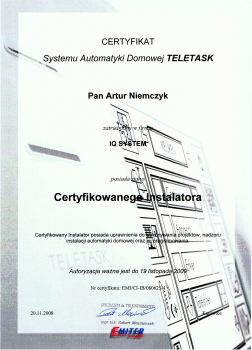

POSIADANE CERTYFIKATY i UPRAWNIENIA
Tradycyjne i inteligentne instalacje elektryczne
Wiarygodny elektryk to taki, który potrafi udokumentować swoją wiedzę i umiejętności z zakresu ogólnie pojętego elektroinstalatorstwa. Każdy elektroinstalator, zatrudniony w mojej firmie, dysponuje odpowiednimi kwalifikacjami, które narzuca ustawodawca. Jako elektryk bedący jednocześnie właścicielem firmy, zobowiązany jestem do prawidłowego i rzetelnego wykonywania zleconych mi zadań oraz do nadzorowania działań, które powierzam moim podwładnym. Posiadam, wymagane do realizacji tych obowiązków, imienne Świadectwa Kwalifikacyjne, uprawniające do wykonywania pracy na stanowiskach eksploatacji i dozoru urządzeń, instalacji i sieci elektroenergetycznych, wytwarzających, przetwarzających, przesyłających i zużywających energię elektryczną, w zakresie: obsługi, konserwacji, remontów, kontrolno-pomiarowym i montażu (wydane dnia 18.06.2008r. w Bielsko-Biała, woj. śląskie).
Certyfikat Inteligentnego Systemu Automatyki Domowej TELETASK, nadający status Certyfikowanego Instalatora, uprawniający do wykonywania projektów i nadzoru inteligentnych instalacji domowych oraz ich programowania:
Certyfikat poręczający posiadanie odpowiedniego przeszkolenia w zakresie instalacji oraz programowania Systemów Automatyki Domowej D2000 i MiniDo, obejmującego:
- zapoznanie z możliwościami systemu i jego poszczególnymi elementami,
- zasady projektowania instalacji dla inteligentnych budynków,
- zasady okablowania systemu i montażu urządzeń,
- praktyczną naukę programowania systemu.
Zabezpieczanie osób i mienia
Licencja pracownika zabezpieczenia technicznego drugiego stopnia, wydana przez Komendanta Wojewódzkiego Policji w Katowicach (woj. śląskie), która uprawnia do:
- montażu elektronicznych urządzeń i systemów alarmowych, sygnalizujących zagrożenie chronionych osób i mienia, oraz eksploatacji, konserwacji i napraw w miejscach ich zainstalowania,
- montażu urządzeń i środków mechanicznego zabezpieczenia oraz ich eksploatacji, konserwacji, napraw i awaryjnego otwierania w miejscach ich zainstalowania,
- opracowywania projektów zabezpieczenia technicznego,
- organizowania i kierowania zespołami pracowników zabezpieczenia technicznego.
Certyfikat ukończenia zaawansowanego szkolenia z zakresu prawidłowego montażu oraz programowania systemów alarmowych Satel w oparciu o centrale serii INTEGRA:
Certyfikat poręczający posiadanie odpowiedniego przeszkolenia z zakresu prawidłowego montażu szaf teleinformatycznych firmy Moeller:
Systemy teleinformatyczne i teletechniczne
Certyfikaty nadające status Certyfikowanego Instalatora VDI, potwierdzające posiadanie wysokich kwalifikacji oraz umiejętności projektowania i wykonywania instalacji okablowania strukturalnego miedzianego i światłowodowego w oparciu o system Legrand VDI, zgodnie z normami PN-EN 50173/A1, PN-EN 50174-2, ISO/IEC 11801:2002 2nd: